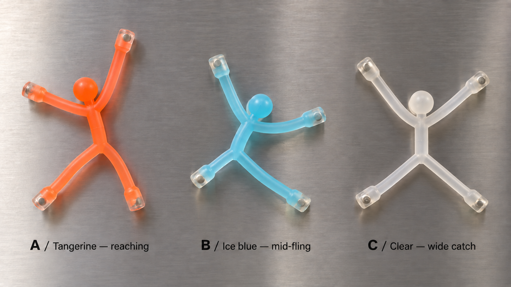
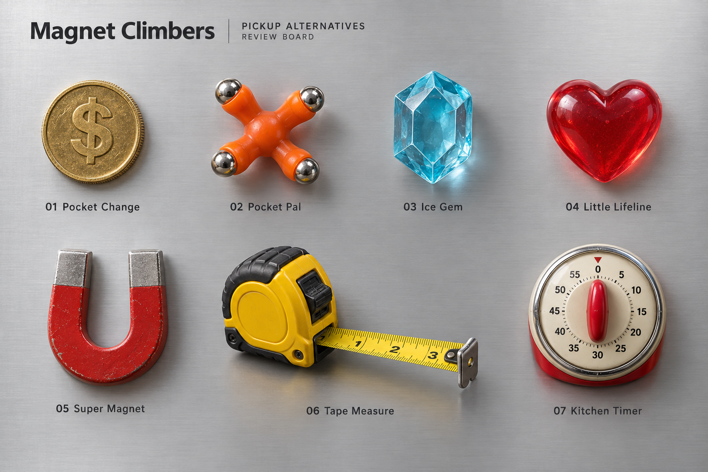
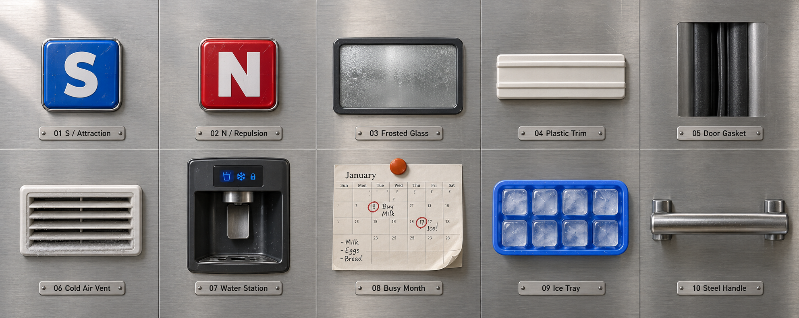
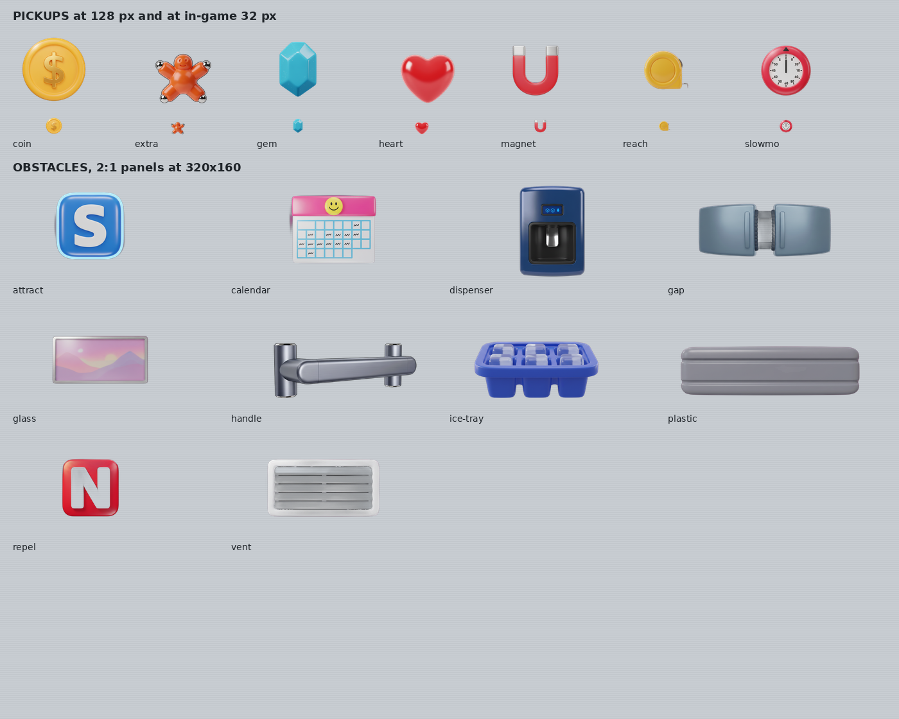

Magnet Climbers / Art review
September 14, 2026 · Review only · Production unchanged
Pocket Pal / based on your real toys
New review options: A Tangerine reaching, B Ice blue mid-fling, C Clear wide catch. Thin translucent rubber and four embedded magnet caps, based on PXL_20260913_221032077.jpg. Pending selection.

Pickup alternatives
All approved except the original Pocket Pal below; its replacements are above.

Obstacle alternatives
Mounted fridge objects and materials. Calendar dates need cleanup; these boards are concepts, not transparent game sprites.

Claude's Gemini reference
From repository commit c6e2d61. Pickups were subsequently integrated by d2f7521.
